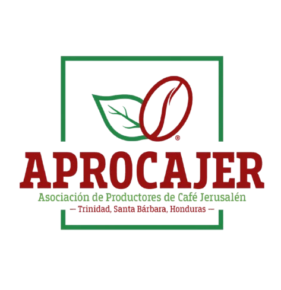

Cafés especiales para el mundo
Más de 500 productores de las montañas de Trinidad, Santa Bárbara, Honduras, conectados con importadores y tostadores que buscan calidad y origen.
Solicita muestrasConozca nuestros cafés
Quiénes somos
APROCAJER nace en Trinidad, Santa Bárbara, a una hora de San Pedro Sula. Producimos, comercializamos y exportamos cafés de especialidad, certificados y convencionales.
Leer nuestra historiaNuestros cafés
Altitud, bosque nublado y maduración lenta dan densidad, dulzor y complejidad.
Parainema
Nuestra variedad de referencia.
Pacamara y Geisha
Perfiles distintivos para mercados exigentes.
Catuaí, Lempira, IHCAFE 90
Variedades con gran adaptación al territorio.
Anacafé 14 y Obata
Completan un parque cafetalero amplio.
Por qué APROCAJER
Trazabilidad
Supervisamos cada etapa, del cultivo a la preparación para la venta. Rastree un lote.
Certificaciones
Fincas certificadas bajo los estándares de cada programa.
Cumplimiento EUDR
Georreferenciación de parcelas para mercados libres de deforestación.
Financiamiento
Apoyo pre-cosecha y en cosecha a nuestros productores.
Servicios
Preparación para exportación
Asesoría técnica y capacitación
Certificación de fincas
Georreferenciación
Tostaduría
Análisis sensorial
Destinos de nuestro café
Estados Unidos, República Checa, Francia y Corea del Sur.
Nuestra historia
- 1949 Tienda y bodega La Confianza
- 2010 Nace Inversiones Jerusalén
- 2015 Primer nano lote a Taiwán
- 2019 Se funda APROCAJER